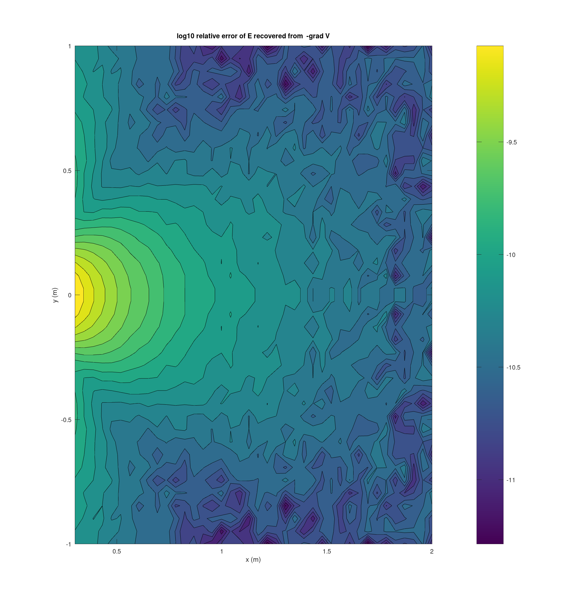
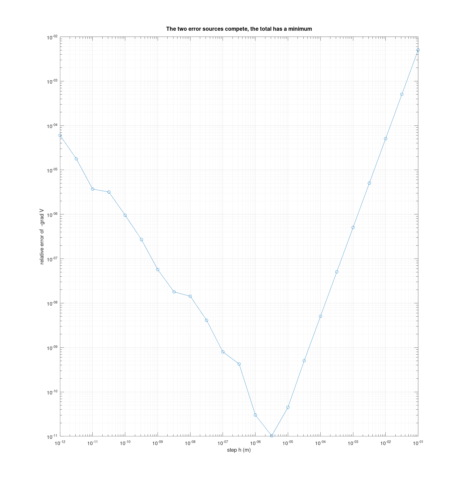
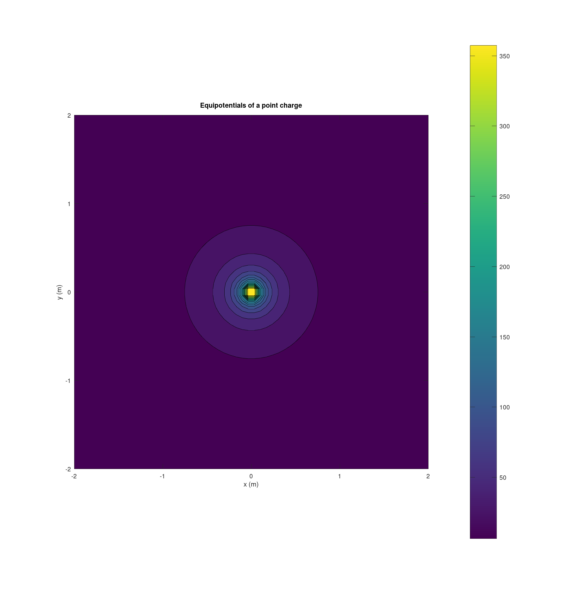
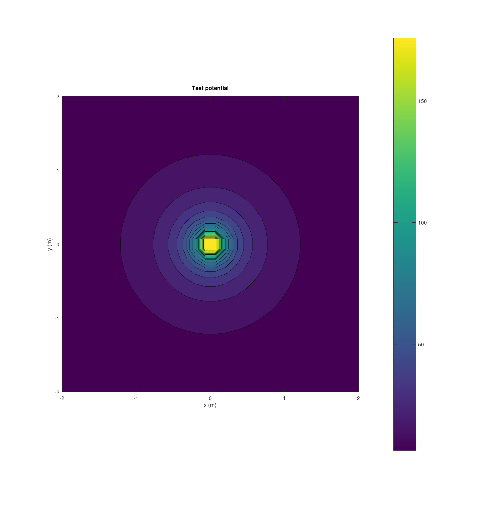

Team 03 Carissa McWilliams, Amelia Harris, and Mitch Nazareth.
clear; close all; e0 = em.const.eps0(); Q = 2e-9; s = em.src.pointCharge(Q, [0 0 0]); FE = @(r) em.field.E(s, r); FV = @(r) em.field.V(s, r);
radii = (1:10)'; Vnum = em.field.V(s, [radii zeros(10,2)]); Vref = Q ./ (4*pi*e0*radii); disp(' r (m) relative error') disp([radii abs(Vnum - Vref)./Vref])
r (m) relative error
1.0000 0
2.0000 0
3.0000 0
4.0000 0
5.0000 0.0000
6.0000 0
7.0000 0
8.0000 0
9.0000 0
10.0000 0.0000
E computed directly and E recovered as minus the gradient of V must agree away from the source.
[X, Y] = meshgrid(linspace(0.3, 2, 40), linspace(-1, 1, 40)); P = [X(:) Y(:) zeros(numel(X),1)]; Ed = em.field.E(s, P); Eg = -em.op.grad(FV, P); errmap = reshape(em.vec.mag(Ed - Eg) ./ em.vec.mag(Ed), size(X)); figure; contourf(X, Y, log10(errmap), 20); colorbar xlabel('x (m)'); ylabel('y (m)') title('log10 relative error of E recovered from -grad V') % Error is largest near the edge of the region where the gradient % is calculated because the gradient is approximated using finite % difference. This creates relative error that gets bigger when % the electric field is smaller.

Truncation error falls as h squared, round off grows as 1 over h. The total has a minimum. Sweep h and find it for this machine.
p0 = [1 0.5 0]; Eexact = em.field.E(s, p0); hs = logspace(-12, -1, 23)'; errh = zeros(size(hs)); for k = 1:numel(hs) Eh = -em.op.grad(FV, p0, hs(k)); errh(k) = em.vec.mag(Eh - Eexact) / em.vec.mag(Eexact); end figure; loglog(hs, errh, 'o-'); grid on xlabel('step h (m)'); ylabel('relative error of -grad V') title('The two error sources compete, the total has a minimum') [emin, imin] = min(errh); fprintf('best h on this machine about %.1e with error %.1e\n', hs(imin), emin); fprintf('the API default h = 1e-5 sits on the flat bottom of this curve\n');
best h on this machine about 3.2e-06 with error 1.0e-11 the API default h = 1e-5 sits on the flat bottom of this curve

loops = { @(t)[2*cos(t) 2*sin(t) zeros(size(t))], ...
@(t)[1+0.5*cos(t) 0.5*sin(3*t) 0.3*sin(t)], ...
@(t)[0.5*cos(t) 1+0.8*sin(t) 0.2*cos(2*t)] };
for k = 1:3
C = em.field.circulation(FE, loops{k}, [0 2*pi], 400);
fprintf('circulation of E on path %d = %.3e\n', k, C);
end
Fnc = @(r) [-r(:,2) r(:,1) zeros(size(r,1),1)];
Cnc = em.field.circulation(Fnc, loops{1}, [0 2*pi], 400);
fprintf('circulation of the control field = %.4f (expect 8 pi, clearly nonzero)\n', Cnc);
% The control matters. A test that only ever confirms zero cannot tell
% correct code from code that always returns zero.
circulation of E on path 1 = 6.395e-14 circulation of E on path 2 = 4.615e-10 circulation of E on path 3 = -4.799e-11 circulation of the control field = 25.1327 (expect 8 pi, clearly nonzero)
pa = [1 0 0]; pb = [0.3 0.4 0]; dV = em.field.V(s, pb) - em.field.V(s, pa); seg = @(t) pa + t.*(pb - pa); work = -em.field.circulation(FE, seg, [0 1], 400); fprintf('V(b) - V(a) from em.field.V = %.6e V\n', dV); fprintf('minus line integral of E, a to b = %.6e V\n', work);
V(b) - V(a) from em.field.V = 1.797510e+01 V minus line integral of E, a to b = 1.797510e+01 V
figure; em.viz.contourV(@(r) em.field.V(s, r), [-2 2], [-2 2], 60, struct('title', 'Equipotentials of a point charge')); hold on em.viz.streamlines(FE, [-2 2], [-2 2], [cosd(0:45:315)' sind(0:45:315)' zeros(8,1)]*0.2, struct()); title('Equipotentials with field lines overlaid')
error: member 'streamlines' in package 'em.viz' does not exist
in:
figure;
em.viz.contourV(@(r) em.field.V(s, r), [-2 2], [-2 2], 60, struct('title', 'Equipotentials of a point charge'));
hold on
em.viz.streamlines(FE, [-2 2], [-2 2], [cosd(0:45:315)' sind(0:45:315)' zeros(8,1)]*0.2, struct());
title('Equipotentials with field lines overlaid')

The step size study implies that there is a size of h small enough to receive high accuracy without driving error higher due to round-off error. This error is caused by a loss in numerical precision when calculating the difference between two very close potential values. Driving h to be smaller is not always safer because eventually the two numerical values become close enough that the difference between them loses precision.
At first, I used midpoint quadrature and numerical derivative, but quickly found that my relative error was larger than my expected relative error. Switching to guass's equations resolved the issue.
I also messed up a with grad.m at first, as I didnt properly support N x 3 inputs, which failed my tests for a bit.
Also on a personal note, I ran into issues with my dependencies getting out of date and I also needed ImageMagick to be able to build the necessary graphics to publish. I updated my flake.nix to include the imagemagick package, and ran a nix flake update. I didn't expect to have to update my build environment, and it stumped me for a couple hours why it was giving me opengl errors and imagemagick errors. Sorry for the rant but this was definitely a struggle point for me haha.
runTests
EECE 306 toolbox test suite
--------------------------------------------------------------
11.3.0
eps0 = 8.8541878128e-12 F/m
mu0 = 1.2566370614e-06 H/m
c0 = 2.9979245808e+08 m/s
eta0 = 376.730314 ohm
Derived constant checks passed.
mag([3 4 0]) = 5 (expect 5 exactly)
unit([3 4 0]) =
0.6000 0.8000 0
unit([0 0 0]) (expect all NaN) =
NaN NaN NaN
angle perpendicular = 1.5707963267949 (expect pi/2)
angle antiparallel = 3.14159265358979, real = 1 (expect pi, 1)
fromTo([1 1 1],[2 3 4]) =
1 2 3
mag input 100x3 output [100 1]
unit input 100x3 output [100 3]
angle input 100x3 output [100 1]
fromTo input 100x3 output [100 3]
PASS test_lab01 0.11 s
spherical roundtrip max error = 5.947e-15
cylindrical roundtrip max error = 2.047e-15
c2sph([0 0 1]) =
1 0 0
c2sph([0 0 -1]) =
1.0000 3.1416 0
phi in the four quadrants = 0.7854 2.3562 3.9270 5.4978 rad
all inside [0, 2*pi) = 1
vector roundtrip (spherical pair) max error = 8.882e-16
magnitude change under conversion max = 8.882e-16
vector roundtrip (cylindrical pair) max error = 6.280e-16
at (0, 5, 0), (Ar, Atheta, Aphi) =
3.0000e+00 1.8370e-16 -2.0000e+00
at (4, 0, 0), (Ar, Atheta, Aphi) =
2.0000e+00 1.2246e-16 3.0000e+00
PASS test_lab02 0.01 s
r (m) relative error
1.0000 0
2.0000 0
3.0000 0
4.0000 0
5.0000 0
6.0000 0
7.0000 0
8.0000 0
9.0000 0.0000
10.0000 0
max |Ex| on bisector = 0.000e+00 V/m
max |E| on the same plane = 6.298e+02 V/m
|E(r)| / |E(2r)| = 8.0003 (expect near 8 for a dipole)
em.field.E on 5000 points took 0.000 s (requirement, under 2 s)
PASS test_lab03 0.60 s
test_lab04 checks complete
PASS test_lab04 0.09 s
div D = 1.003980e-06, rho_v = 1.000000e-06
test_lab05 checks complete
PASS test_lab05 0.74 s
test_lab06 checks complete
PASS test_lab06 0.76 s
--------------------------------------------------------------
6 passed, 0 failed, 6 total
All tests passing.
